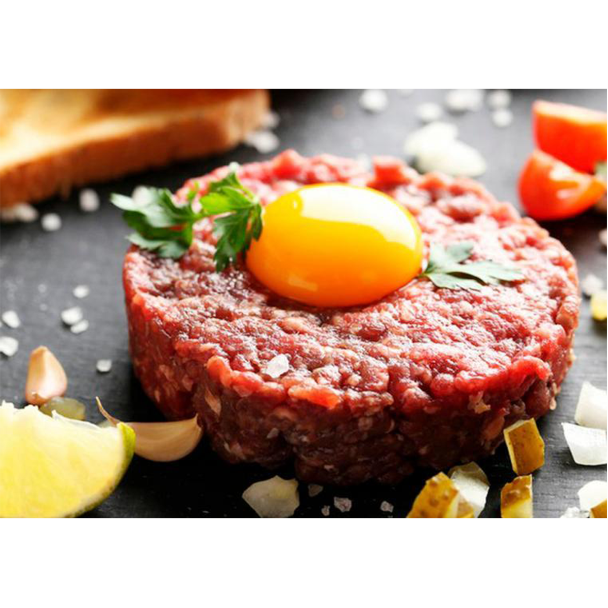
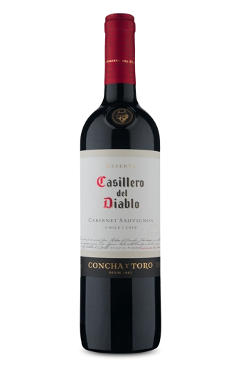
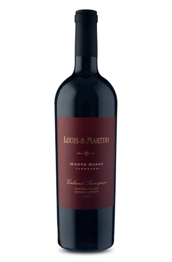
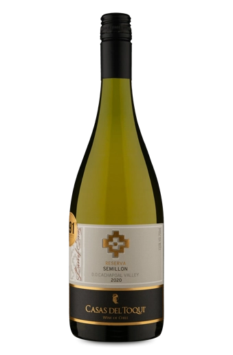

CAFÉ DA MANHÃ
ALMOÇO
Casillero del Diablo Cabernet Sauvignon 2019
JANTAR

Steak Tartare
O steak tartare é um prato que faz sucesso ao redor do mundo todo. Aqui, a carne é combinada com alcaparras, cebola roxa, salsinha, sal, pimenta-preta, suco de limão, azeite de oliva e gema de ovo.
BEBIDAS

Casillero del Diablo Cabernet Sauvignon 2019
É a variedade mais famosa do Casillero del Diablo. Sua colheita de 2005 foi premiada por Decanter como a melhor do planeta. Dono de intensos aromas de cerejas, ameixas e toques de baunilha e tostado. Dos tintos, é o que possui mais corpo, é elegante e ideal para acompanhar carnes como um corte de rês no molho de pimenta.

Louis M. Martini Monte Rosso Cabernet Sauvignon 2014
Esse pontuado rótulo é produzido com uvas provenientes do nobre e lendário vinhedo de Monte Rosso, localizado em um terroir privilegiado que une elevada altitude, solos vulcânicos e um clima ideal. O baixo rendimento proporciona uvas com alta concentração e qualidade, o que justifica toda a grandiosidade desse vinho.

Casas Del Toqui Reserva Semillon 2020
Um reserva branco com boa intensidade de aromas e expressivo em boca. Sua vinificação contempla fermentação em baixas temperaturas, bâtonnage das lias finas (basicamente é mexer as leveduras que ficam no fundo do recipiente para garantir mais complexidade ao vinho) e maturação parcial em carvalho, que deixam o vinho fresco e com boa presença no paladar.